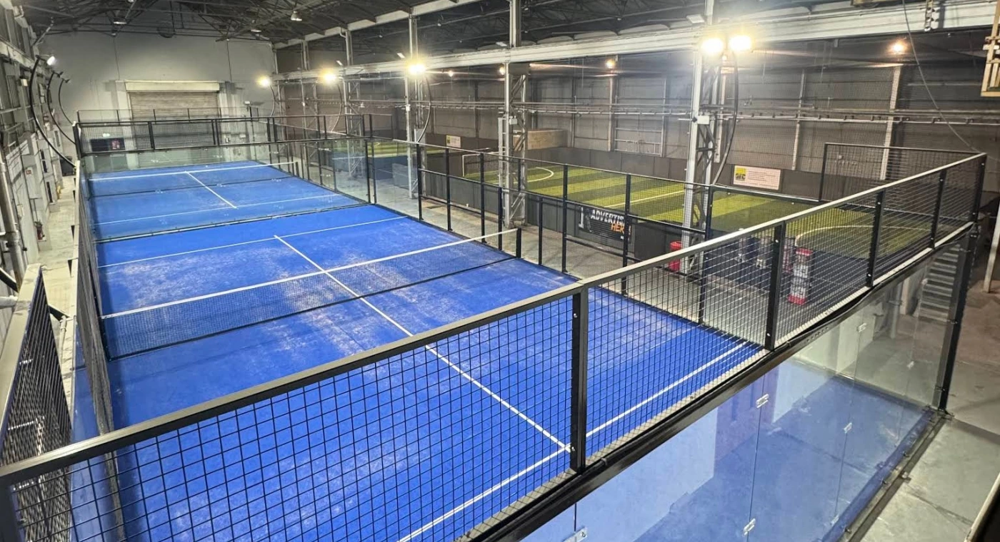

PREMIUM OPEN-VIEW SYSTEM
Super Panoramic Padel Court for Premium Venues
Quick Answer: What is a Super Panoramic Padel Court? It is an open-view commercial court configuration designed to reduce visual obstruction around the main viewing sides, making it suitable for premium clubs, indoor venues and showcase courts. Final structure, foundation, lighting and venue integration remain project-specific.

System Overview
Designed around real project conditions.
Premium open-view padel court system for high-end clubs, indoor venues, showcase courts and professional facilities.
The super panoramic padel court is specified around venue use, local climate, ground conditions and the confirmed commercial brief. Final structural and foundation requirements remain project-specific.
Best suited for
- Premium Clubs
- Indoor Venues
- Showcase Courts
Key Considerations
What the project team reviews.
Venue-focused detailing
Professional lighting coordination
Premium club and tournament applications
Technical & Procurement Summary
Open-view design still depends on structural coordination.
Super Panoramic courts are selected for premium commercial venues where spectator visibility and architectural openness matter. The reduced visual obstruction must still be coordinated with structure, glass, foundations, lighting and site conditions.
| System type | Premium open-view / super panoramic commercial padel court |
|---|---|
| Glass | 12 mm tempered glass for the confirmed project configuration |
| Steel & mesh | Galvanized / corrosion-protected steel structure with welded mesh elements according to confirmed specification |
| Lighting | Commercial LED lighting coordinated with the selected court and venue layout |
| Foundation interface | Anchor and foundation requirements are confirmed from site conditions, wind exposure and the selected court system |
| Best fit | Premium clubs, hotels, resorts, show courts and commercial venues where open viewing is a priority |
| MOQ | 1 set for commercial project quotation |
| Production planning | Confirmed after drawings, finish, quantity and project-specific structural requirements are approved |
Buyer checkpoint. “Super Panoramic” should not be judged by appearance alone. Ask for the actual structural specification, glass, connection details, corrosion protection, foundation requirements and installation documents.
Buyer FAQ
Super Panoramic padel court questions.
What is the main difference between Panoramic and Super Panoramic courts?
Both prioritize viewing quality, but Super Panoramic configurations are designed for an even more open visual experience. The exact structural arrangement should be compared using drawings and written specifications rather than product names alone.
Where is a Super Panoramic court most suitable?
It is commonly considered for premium clubs, hotel and resort venues, show courts and commercial facilities where architecture, spectator sightlines and presentation are important.
Does the more open design change structural requirements?
It can. Structural sections, connections, foundations and wind assumptions must be reviewed for the selected configuration and project location. Open-view design does not remove the need for engineering.
What should be checked before ordering?
Confirm the structural specification, 12 mm tempered glass, mesh, corrosion protection, turf, lighting, foundation interface, site access, project location and any roof or wind requirements.
Can colors and finishes be customized?
Yes, project colors and selected finishes can be coordinated within the confirmed production scope. Structural changes require technical review.
Does SPORTENVO provide installation support?
SPORTENVO can provide technical drawings and installation guidance as part of the confirmed scope. Local civil work, lifting, permits and on-site responsibilities should be agreed before shipment.
Project Fit
Is the Super Panoramic Padel Court right for your project?
Super Panoramic is primarily a presentation and premium-venue decision; structure, foundation and climate still determine suitability.
Choose Super Panoramic when
- Premium clubs want a showcase court and maximum visual openness.
- Indoor venues prioritize spectator sightlines and architectural presentation.
- Hotels and resorts want a design-led guest-facing court.
- Broadcast, event or flagship courts need a premium visual standard.
Route the project elsewhere when
- Panoramic Padel Court — balanced commercial specification and budget.
- Classic Padel Court — practical operation and cost control.
- Anti-Hurricane Padel Court — FORCE-HX Series — exposed coastal / high-wind sites.
- Padel Court with Roof — year-round permanent weather protection.
Not sure? Use the Project Configurator and compare the premium court against the actual venue and site conditions.
Verification & Project Support
Check the supplier evidence behind the system.
Use the quality, engineering and project-reference pages to verify the specification, manufacturing process, documentation and delivery scope before the final order is confirmed.
Procurement Resources
Plan before you specify.
Use the buyer guides and project references to check the site, scope and commercial assumptions before the final system is confirmed.
Related Systems
Build the coordinated scope.
Project Review
Check the system against your site.
Share the country, venue type, court quantity and site conditions.
Request a Project Review